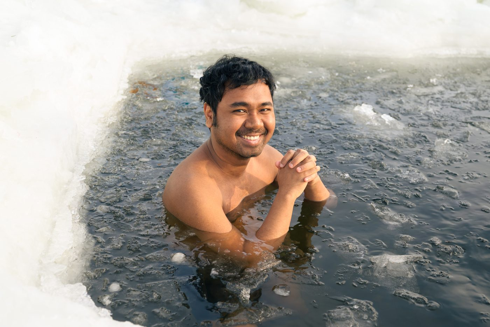

2026–2028
Postdoctoral Researcher, Department of Clinical Microbiology and IceLab, Umeå University, Sweden
I study how genes are regulated, from bacteria to humans, using both mathematical models and large-scale data.
I completed my PhD in Physics at IISER Kolkata, India, under the supervision of Supratim Sengupta. There I built mathematical models showing a plausible pathway for the emergence of primitive cells at the origin of life.
I then moved to Umeå University as a postdoc in the groups of Peter Lind and Eric Libby. Since 2026 I have been working with Laura Carroll and Johan Henriksson on developing computational methods for single-cell omics.
My work applies top-down and bottom-up approaches to understand gene regulation in both prokaryotes (bacteria) and eukaryotes (humans).
With the Henriksson and Carroll groups, I am developing new methods to analyse very large single-cell omics datasets, drawing on ideas from mathematical and systems biology.
I combined a mathematical model of the gene regulatory network behind efflux pumps, a genetic algorithm for parameter estimation, and evolutionary simulations to predict which resistance mutations are likely to arise. The model shows cross-resistance and collateral sensitivity between antibiotics, and it identifies effective sequential treatment strategies.
In a collaboration with a fellow postdoc, I analysed RNA sequencing data from roots treated with glutamine, an organic nitrogen source. We identified a key transcription factor that controls root growth under glutamine by regulating one of the auxin biosynthesis pathways.
My doctoral thesis, Origin of Life: Insights from Computational Models, modelled how protocells of increasing complexity could emerge and evolve in an RNA world.
Postdoctoral Researcher, Department of Clinical Microbiology and IceLab, Umeå University, Sweden
Postdoctoral Researcher, Department of Molecular Biology and IceLab, Umeå University, Sweden
Ph.D. Physics (August 2023), Indian Institute of Science Education and Research Kolkata
M.Sc. Physics, University of Calcutta, India
B.Sc. Physics, University of Calcutta, India
Excellence by Choice Postdoctoral Fellowship in Life Science, Knut and Alice Wallenberg Foundation, Sweden
INSPIRE Fellowship, Department of Science and Technology (DST), Government of India
INSPIRE Scholarship for Higher Education (SHE), Department of Science and Technology (DST), Government of India
Mechanisms of drug resistance and tolerance in bacteria, fungi, and cancer, EMBL Heidelberg, Germany (oral presentation)
Nordic-EMBL Partnership Meeting, Umeå, Sweden
IceLab Camp: training camp on writing interdisciplinary research grants, Umeå University, Sweden
Youth in High-Dimensions: Recent Progress in Machine Learning, High-Dimensional Statistics and Inference, ICTP (virtual)
Origins of Life and Evolving Chemical Systems Meeting, NCBS (virtual), India
Summer School on Dynamics of Complex Systems, ICTS, India
Teaching assistant, Evolutionary Dynamics
Teaching assistant, Introduction to Computer Programming
English (C1), Swedish (A2), Bengali (native)
